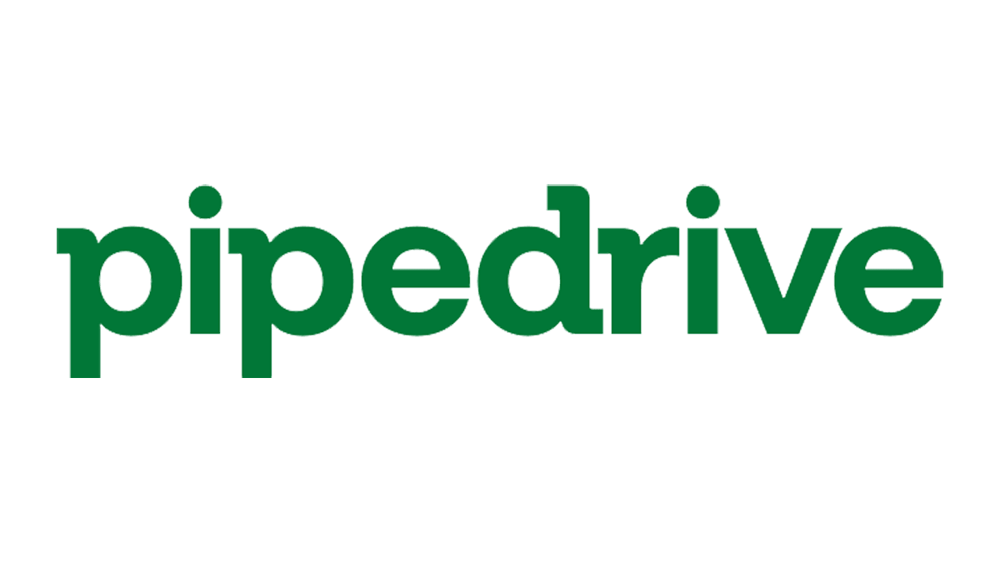
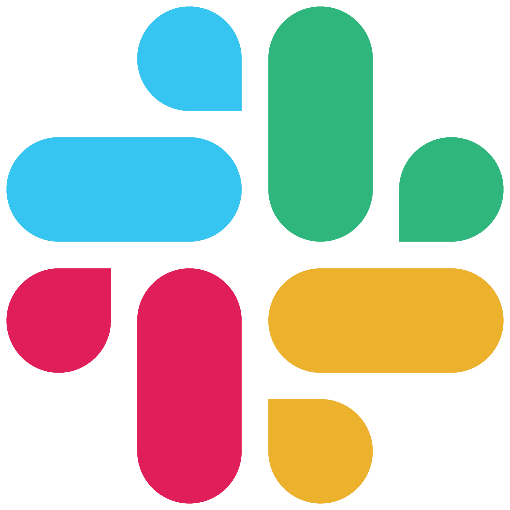

Most businesses use barely 20% of the tools they're subscribed to. We unlock the other 80% so you actually get your money's worth.

Your tools don't talk to each other. Leads fall through the cracks and your team does manually what software should handle.
You have a process, but it relies on people. Copy-pasting between apps and chasing updates eats time you don't have.
Automations exist but they're held together with string. One break and the whole flow falls apart, usually at the worst moment.
Answer 10 quick questions to get your Automation Score and a personalised roadmap. Takes 3 minutes.
Both start with a free mapping session. We find your highest-impact automation opportunities before we recommend or build anything.
We start with a free mapping session to find your highest-impact automation opportunity. Then we build it, test it, and keep it running.
We tackle your top 5–10 automation opportunities in one engagement. You get the bots built and running, plus a full Automation Blueprint covering what to focus on next.
Most businesses are running some combination of tools that don't talk to each other. Below are a few typical examples of apps we work with but the list doesn't stop here. If it has an API, we can connect it.


Pipedrive is only as good as the data going into it, and most teams are too busy selling to keep it clean. We build automations that do the admin for you.
Typical automations
Xero holds your financial data, but getting it there usually means someone copying numbers between systems. We connect Xero to the rest of your stack so the books stay accurate without the manual entry.
Typical automations
WhatsApp has the open rates email only dreams about. We help businesses use it professionally, automated where it makes sense, personal where it matters.
Typical automations
Slack becomes genuinely useful when it surfaces things your team actually needs to know, not just another place to check. We wire it into your workflows so key updates arrive without anyone having to send them.
Typical automations
n8n is the automation platform we build on. It runs securely on your own infrastructure, which means your data stays within your control and never passes through a third-party cloud. For businesses handling sensitive client information or working under GDPR, that matters.
What that means in practice
We don't just build these for clients. Watch how our own marketing funnel runs on n8n, start to finish.